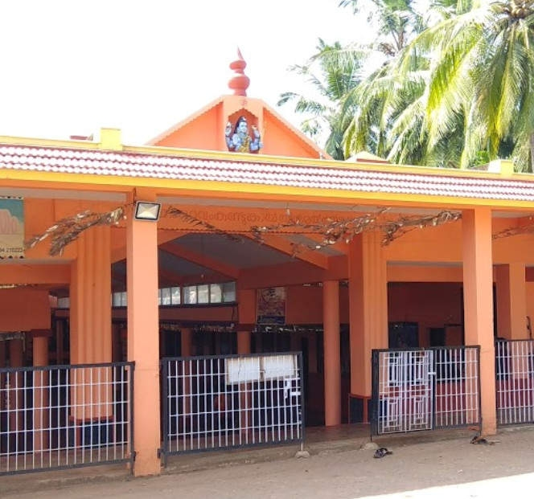

Thonikadavu is a private plantation near Kundankuzhi, Kasaragod district. It passes by Mulliyar Forest. It’s definitely a must-see place for wildlife enthusiasts and those who are interested in taking in the enchantment of the forest. Thonikadavu trekking will give you enchanting moments, moments to devour Nature’s beauty. Spread over hundreds of acres, it is full of coconut and areca nut trees. Tourists can trek for about five hours and reach Payaswani River and bath in its water. The pleasure one gets out of it is inexplicable. Thonikadavu trekking is a major part of Bekal-Thalakaveri trekking (Thonikadavu trekking is in the centre of Malom Forest). Thonikadavu is rich with bird-wildlife-biodiversity. The trip is a study tour of nature. The trekking which unveils the beauty of the Western Ghats is a visual delight. It refreshes the mind and body.
